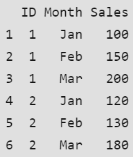
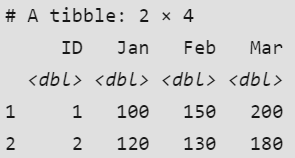
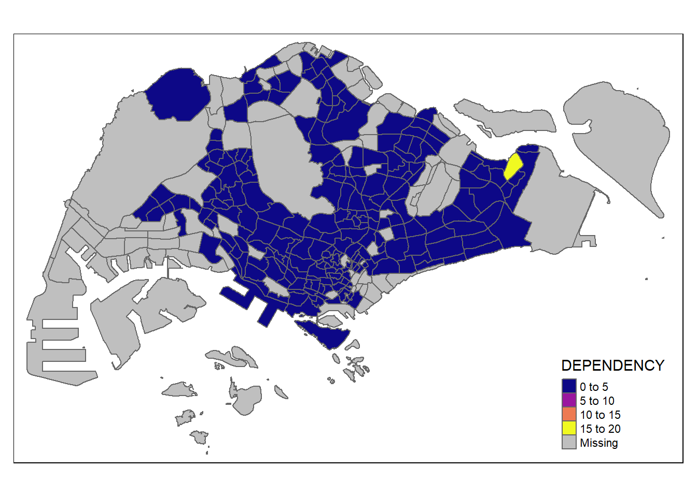
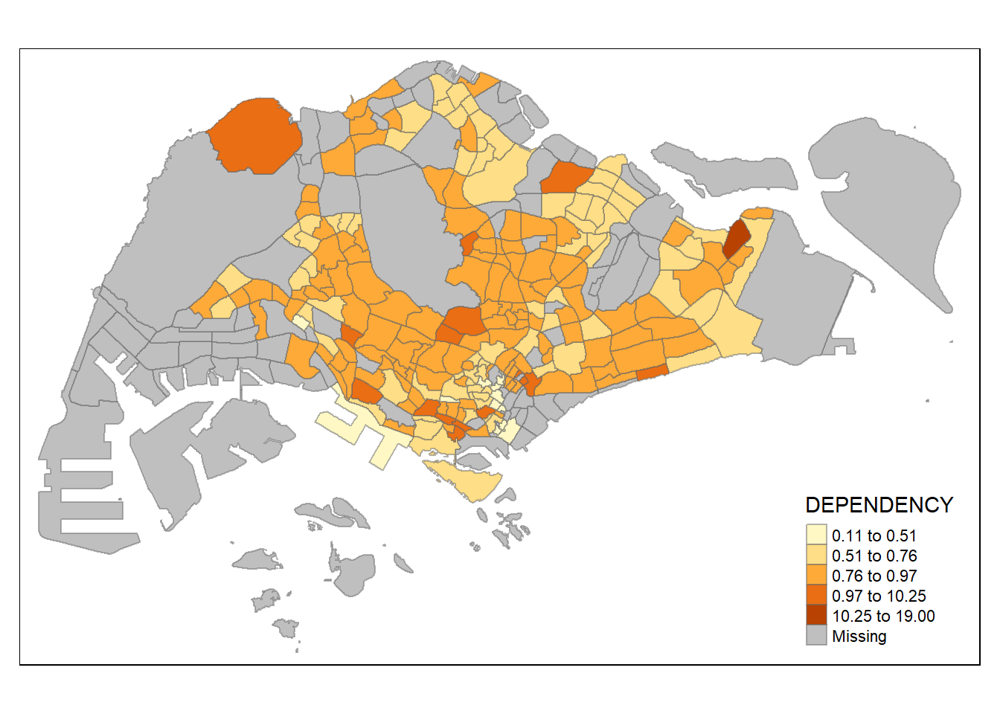
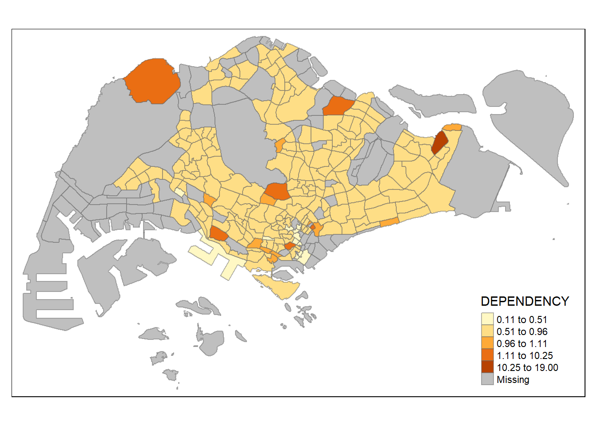
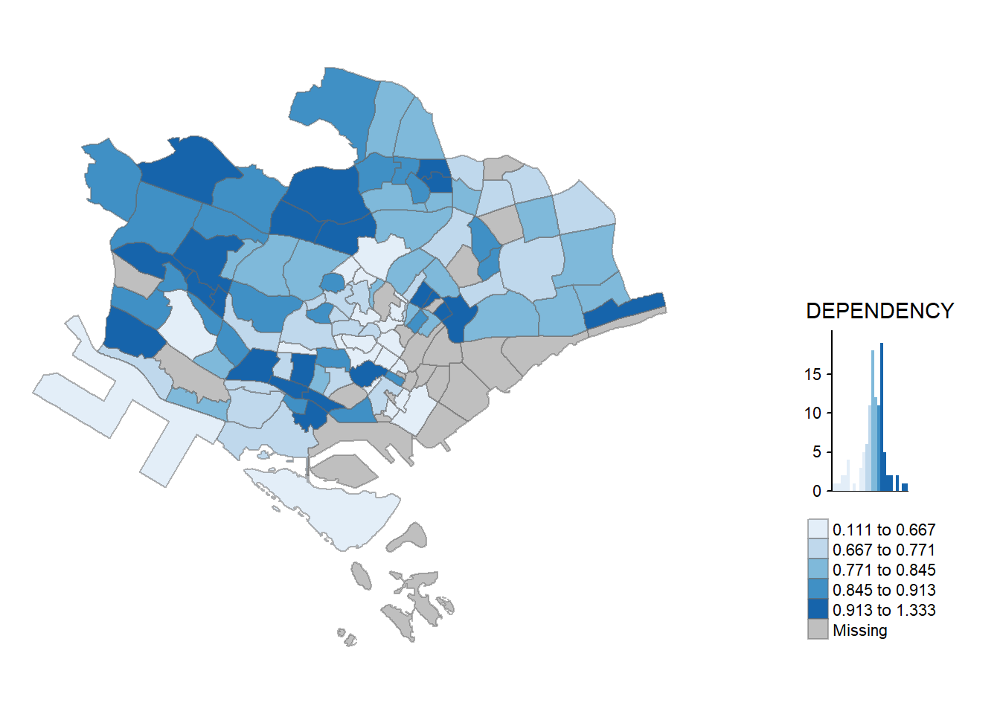

pacman::p_load(sf, tmap, tidyverse)Hands-on Exercise 2
Thematic Mapping and GeoVisualisation with R
1.0 Overview -Thematic Map
Display info about a topic/theme on a geographic location leveraging our spatial cognition & vision systems
Usage exmaples
- Visualize population, temperature, crime rates, property prices using symbols
Objective
- Plot functional & truthful choropleth maps using
tmappackages
Outcome
2.0 Setup
2.1 Installing R-Packages
tmap package
readr for importing delimited text file,
tidyr for tidying data,
dplyr for wrangling data and
sf for handling geospatial data
* Among the four packages, readr, tidyr and dplyr are part of tidyverse package. [Only need to install tidyverse]
The code chunk below will be used to install and load these packages in RStudio.
2.2 Data Acquisition
2 datasets will be used:
- URA Master Plan 2014 Subzone Boundary (Web) -(i.e. MP14_SUBZONE_WEB_PL) in ESRI shapefile format
- geographical boundary of Singapore at the planning subzone level
- Singapore Residents by Planning Area / Subzone, Age Group, Sex and Type of Dwelling, June 2011-2020 -(i.e. respopagesextod2011to2020.csv) in csv format
- aspatial data file
- Does not contain any coordinates values, but it’s PA and SZ fields can be used as unique identifiers to geocode to MP14_SUBZONE_WEB_PL shapefile.
2.3 Importing Geospatial Data into R
- Import
MP14_SUBZONE_WEB_PLshapefile into R as a simple feature data frame calledmpsz
mpsz = st_read(dsn = "data/geospatial/MasterPlan2014SubzoneBoundaryWebSHP",
layer = "MP14_SUBZONE_WEB_PL")Reading layer `MP14_SUBZONE_WEB_PL' from data source
`C:\Users\ngkng\source\github\VAA\Hands-on_Ex\Hands-on_Ex02\data\geospatial\MasterPlan2014SubzoneBoundaryWebSHP'
using driver `ESRI Shapefile'
Simple feature collection with 323 features and 15 fields
Geometry type: MULTIPOLYGON
Dimension: XY
Bounding box: xmin: 2667.538 ymin: 15748.72 xmax: 56396.44 ymax: 50256.33
Projected CRS: SVY21- Examine content of mpsz
mpszSimple feature collection with 323 features and 15 fields
Geometry type: MULTIPOLYGON
Dimension: XY
Bounding box: xmin: 2667.538 ymin: 15748.72 xmax: 56396.44 ymax: 50256.33
Projected CRS: SVY21
First 10 features:
OBJECTID SUBZONE_NO SUBZONE_N SUBZONE_C CA_IND PLN_AREA_N
1 1 1 MARINA SOUTH MSSZ01 Y MARINA SOUTH
2 2 1 PEARL'S HILL OTSZ01 Y OUTRAM
3 3 3 BOAT QUAY SRSZ03 Y SINGAPORE RIVER
4 4 8 HENDERSON HILL BMSZ08 N BUKIT MERAH
5 5 3 REDHILL BMSZ03 N BUKIT MERAH
6 6 7 ALEXANDRA HILL BMSZ07 N BUKIT MERAH
7 7 9 BUKIT HO SWEE BMSZ09 N BUKIT MERAH
8 8 2 CLARKE QUAY SRSZ02 Y SINGAPORE RIVER
9 9 13 PASIR PANJANG 1 QTSZ13 N QUEENSTOWN
10 10 7 QUEENSWAY QTSZ07 N QUEENSTOWN
PLN_AREA_C REGION_N REGION_C INC_CRC FMEL_UPD_D X_ADDR
1 MS CENTRAL REGION CR 5ED7EB253F99252E 2014-12-05 31595.84
2 OT CENTRAL REGION CR 8C7149B9EB32EEFC 2014-12-05 28679.06
3 SR CENTRAL REGION CR C35FEFF02B13E0E5 2014-12-05 29654.96
4 BM CENTRAL REGION CR 3775D82C5DDBEFBD 2014-12-05 26782.83
5 BM CENTRAL REGION CR 85D9ABEF0A40678F 2014-12-05 26201.96
6 BM CENTRAL REGION CR 9D286521EF5E3B59 2014-12-05 25358.82
7 BM CENTRAL REGION CR 7839A8577144EFE2 2014-12-05 27680.06
8 SR CENTRAL REGION CR 48661DC0FBA09F7A 2014-12-05 29253.21
9 QT CENTRAL REGION CR 1F721290C421BFAB 2014-12-05 22077.34
10 QT CENTRAL REGION CR 3580D2AFFBEE914C 2014-12-05 24168.31
Y_ADDR SHAPE_Leng SHAPE_Area geometry
1 29220.19 5267.381 1630379.3 MULTIPOLYGON (((31495.56 30...
2 29782.05 3506.107 559816.2 MULTIPOLYGON (((29092.28 30...
3 29974.66 1740.926 160807.5 MULTIPOLYGON (((29932.33 29...
4 29933.77 3313.625 595428.9 MULTIPOLYGON (((27131.28 30...
5 30005.70 2825.594 387429.4 MULTIPOLYGON (((26451.03 30...
6 29991.38 4428.913 1030378.8 MULTIPOLYGON (((25899.7 297...
7 30230.86 3275.312 551732.0 MULTIPOLYGON (((27746.95 30...
8 30222.86 2208.619 290184.7 MULTIPOLYGON (((29351.26 29...
9 29893.78 6571.323 1084792.3 MULTIPOLYGON (((20996.49 30...
10 30104.18 3454.239 631644.3 MULTIPOLYGON (((24472.11 29...* Why show 10 only? -> Ans: By default, only show a subset of data.
- Use print(mpsz, n=20) -> show 20 data
2.4 Importing Aspatial Data into R
- Import
Populationdata
popdata <- read_csv("data/aspatial/respopagesextod2011to2020.csv")Rows: 984656 Columns: 7
── Column specification ────────────────────────────────────────────────────────
Delimiter: ","
chr (5): PA, SZ, AG, Sex, TOD
dbl (2): Pop, Time
ℹ Use `spec()` to retrieve the full column specification for this data.
ℹ Specify the column types or set `show_col_types = FALSE` to quiet this message.2.5 Data Preparation and Wrangling
To create a thematic map, first, gather a data table for the year 2020. This table should include the variables PA, SZ, YOUNG, ECONOMY ACTIVE, AGED, TOTAL, and DEPENDENCY.
YOUNG: age group 0 to 4 until age group 20 to 24,
ECONOMY ACTIVE: age group 25-29 until age group 60-64,
AGED: age group 65 and above,
TOTAL: all age group, and
DEPENDENCY: the ratio between young and aged against economy active group
2.5.1 Data Wrangling
The following data wrangling and transformation functions will be used:
pivot_wider()of tidyr package -> mutate(),filter(),group_by()andselect()of dplyr package
popdata2020 <- popdata %>%
filter(Time == 2020) %>%
group_by(PA, SZ, AG) %>%
summarise(`POP` = sum(`Pop`)) %>%
ungroup()%>%
pivot_wider(names_from=AG,
values_from=POP) %>%
mutate(YOUNG = rowSums(.[3:6])
+rowSums(.[12])) %>%
mutate(`ECONOMY ACTIVE` = rowSums(.[7:11])+
rowSums(.[13:15]))%>%
mutate(`AGED`=rowSums(.[16:21])) %>%
mutate(`TOTAL`=rowSums(.[3:21])) %>%
mutate(`DEPENDENCY` = (`YOUNG` + `AGED`)
/`ECONOMY ACTIVE`) %>%
select(`PA`, `SZ`, `YOUNG`,
`ECONOMY ACTIVE`, `AGED`,
`TOTAL`, `DEPENDENCY`)`summarise()` has grouped output by 'PA', 'SZ'. You can override using the
`.groups` argument.| filter | only take Time == 2020 |
| mutate | calculation |
| mutate(YOUNG = rowSums(.[3:6]) + rowSums(.[12])) |
|
popdata2020# A tibble: 332 × 7
PA SZ YOUNG `ECONOMY ACTIVE` AGED TOTAL DEPENDENCY
<chr> <chr> <dbl> <dbl> <dbl> <dbl> <dbl>
1 Ang Mo Kio Ang Mo Kio Town Cen… 1440 2610 760 4810 0.843
2 Ang Mo Kio Cheng San 6640 15460 6050 28150 0.821
3 Ang Mo Kio Chong Boon 6150 13950 6470 26570 0.905
4 Ang Mo Kio Kebun Bahru 5540 12090 5120 22750 0.882
5 Ang Mo Kio Sembawang Hills 2100 3410 1310 6820 1
6 Ang Mo Kio Shangri-La 3960 8420 3610 15990 0.899
7 Ang Mo Kio Tagore 2220 4200 1530 7950 0.893
8 Ang Mo Kio Townsville 4690 11450 5100 21240 0.855
9 Ang Mo Kio Yio Chu Kang 0 0 0 0 NaN
10 Ang Mo Kio Yio Chu Kang East 1220 2300 750 4270 0.857
# ℹ 322 more rows2.5.2 Joining Geospatial Data and Attribute Data
Before performing georelational join,
- convert values in PA & SZ fields to UPPERCASE -right now is both upper & lower case
(SUBZONE_N and PLN_AREA_N are already in UPPERCASE)
popdata2020 <- popdata2020 %>%
mutate_at(.vars = vars(PA, SZ),
.funs = list(toupper)) %>%
filter(`ECONOMY ACTIVE` > 0)- use ‘left_join()’ from dplyr to merge geo data with the attribute table, matching them by the planning subzone names (like
SUBZONE_NandSZ).
mpsz_pop2020 <- left_join(mpsz, popdata2020,
by = c("SUBZONE_N" = "SZ"))(By using mpsz as the starting point (the left table), we make sure that the result keeps all the special geographic information (like shapes and locations) from mpsz.)
3.0 Choropleth Mapping Geospatial Data Using tmap
Choropleth mapping is a way to show information on a map using colors or patterns for different areas like countries or states. For example, a researcher might use this type of map to show where older people live in Singapore based on specific zones.
To create these maps with the tmap package, you can:
Use
qtm()> Plot a thematic map.Use
tmapelements -> Plot a more detailed and customized map.
3.1 Plot with qtm()
The easiest and quickest to draw a choropleth map using tmap is using qtm(). It is concise and provides a good default visualisation in many cases.
tmap_mode("plot")tmap mode set to plottingqtm(mpsz_pop2020,
fill = "DEPENDENCY",
fill.palette ="plasma")
tmap_mode(“plot”) -> produce static map
tmap_mode(“view”) -> interactive mode
fill = “DEPENDENCY” -> use this attribute to determine color fill for each polygon(area) on the map
3.2 Usage of tmap’s element
tm_shape(mpsz_pop2020)+
tm_fill("DEPENDENCY",
style = "quantile",
palette = "Blues",
title = "Dependency ratio") +
tm_layout(main.title = "Distribution of Dependency Ratio by planning subzone",
main.title.position = "center",
main.title.size = 1.2,
legend.height = 0.45,
legend.width = 0.35,
frame = TRUE) +
tm_borders(alpha = 0.5) +
tm_compass(type="8star", size = 2) +
tm_scale_bar() +
tm_grid(alpha =0.2) +
tm_credits("Source: Planning Sub-zone boundary from Urban Redevelopment Authorithy (URA)\n and Population data from Department of Statistics DOS",
position = c("left", "bottom"))
3.3 Drawing a base map
tm_shape(mpsz_pop2020) +
tm_polygons()
Start with tm_shape() -> data to use for map
tm_fill() and tm_polygons() -> add details
3.4 Drawing a choropleth map using tm_polygons()
tm_shape(mpsz_pop2020)+
tm_polygons("DEPENDENCY")
Default: Missing Value(grey), Color scheme of ColorBrewer(YlOrRd), Interval binning(pretty)
3.5 Drawing a choropleth map using tm_fill() and tm_border()
m_polygons() is a wraper of tm_fill() and tm_border().
tm_fill() -> shades the polygons by using the default colour scheme and tm_borders() adds the borders of the shapefile onto the choropleth map.
tm_shape(mpsz_pop2020)+
tm_fill("DEPENDENCY")
* planning subzones are shared according to the respective dependecy values
tm_borders()-> add boundary of the planning subzones
tm_shape(mpsz_pop2020)+
tm_fill("DEPENDENCY") +
tm_borders(lwd = 0.1, alpha = 1)
alpha -> transparency no. between 0 (totally transparent) and 1 (not transparent) [Default = 1]
col = border colour,
lwd = border line width. default is 1
lty = border line type. default is “solid”.
4.0 Data classification methods of tmap
10 methods: fixed, sd, equal, pretty (default), quantile, kmeans, hclust, bclust, fisher, and jenks.
* Need to put style arg in tm_fill() or tm_polygons()
4.1.0 style = “quantile”
tm_shape(mpsz_pop2020)+
tm_fill("DEPENDENCY",
n = 5,
style = "quantile") +
tm_borders(alpha = 0.5)
‘quantile’ are more evenly distributed than “equal”
4.1.1 style = “equal”
tm_shape(mpsz_pop2020)+
tm_fill("DEPENDENCY",
n = 5,
style = "equal") +
tm_borders(alpha = 0.5)
4.1.2 style = “sd”
tm_shape(mpsz_pop2020)+
tm_fill("DEPENDENCY",
n = 5,
style = "sd") +
tm_borders(alpha = 0.5)
4.1.3 style = “pretty”
tm_shape(mpsz_pop2020)+
tm_fill("DEPENDENCY",
n = 5,
style = "pretty") +
tm_borders(alpha = 0.5)
4.1.4 style = “kmeans”
tm_shape(mpsz_pop2020)+
tm_fill("DEPENDENCY",
n = 5,
style = "kmeans") +
tm_borders(alpha = 0.5)
4.1.5 style = “hclust”
tm_shape(mpsz_pop2020)+
tm_fill("DEPENDENCY",
n = 5,
style = "hclust") +
tm_borders(alpha = 0.5)
4.1.6 style = “bclust”
tm_shape(mpsz_pop2020)+
tm_fill("DEPENDENCY",
n = 5,
style = "bclust") +
tm_borders(alpha = 0.5)
Committee Member: 1(1) 2(1) 3(1) 4(1) 5(1) 6(1) 7(1) 8(1) 9(1) 10(1)
Computing Hierarchical Clustering4.1.7 style = “fisher”
tm_shape(mpsz_pop2020)+
tm_fill("DEPENDENCY",
n = 5,
style = "fisher") +
tm_borders(alpha = 0.5)
4.1.8 style = “jenks”
tm_shape(mpsz_pop2020)+
tm_fill("DEPENDENCY",
n = 5,
style = "jenks") +
tm_borders(alpha = 0.5)
5.0 Plotting Choropleth Maps with Custom Breaks
For built-in styles, the map automatically determines the category breaks.
Manual -> use breaks argument in tm_fill(), in tmap (need specify n+1 values for n categories in ascending order, because each break range includes a min & max)
Currently,
summary(mpsz_pop2020$DEPENDENCY) Min. 1st Qu. Median Mean 3rd Qu. Max. NA's
0.1111 0.7147 0.7866 0.8585 0.8763 19.0000 92 With reference to the results above, we set break point at 0.60, 0.70, 0.80, and 0.90. In addition, we also need to include a min and max, which we set at 0 and 100. Our breaks vector is thus c(0, 0.60, 0.70, 0.80, 0.90, 1.00)
tm_shape(mpsz_pop2020)+
tm_fill("DEPENDENCY",
breaks = c(0, 0.60, 0.70, 0.80, 0.90, 1.00)) +
tm_borders(alpha = 0.5)Warning: Values have found that are higher than the highest break
6.0 Colour Scheme
tmap supports colour ramps either defined by the user or a set of predefined colour ramps from the RColorBrewer package.
6.1 Using ColourBrewer palette
tm_shape(mpsz_pop2020)+
tm_fill("DEPENDENCY",
n = 6,
style = "quantile",
palette = "Blues") +
tm_borders(alpha = 0.5)
To reverse the colour shading, add a “-” prefix.
tm_shape(mpsz_pop2020)+
tm_fill("DEPENDENCY",
n = 6,
style = "quantile",
palette = "-Blues") +
tm_borders(alpha = 0.5)
7.0 Map Layouts
eg. Title, scale bar, compass, margins, aspects ratios
7.1 Map Legend
tm_shape(mpsz_pop2020)+
tm_fill("DEPENDENCY",
style = "jenks",
palette = "Blues",
legend.hist = TRUE,
legend.is.portrait = TRUE,
legend.hist.z = 0.1) +
tm_layout(main.title = "Distribution of Dependency Ratio by planning subzone \n(Jenks classification)",
main.title.position = "center",
main.title.size = 1,
legend.height = 0.45,
legend.width = 0.35,
legend.outside = FALSE,
legend.position = c("right", "bottom"),
frame = FALSE) +
tm_borders(alpha = 0.5)
7.2 Map Style (tmap_style)
tm_shape(mpsz_pop2020)+
tm_fill("DEPENDENCY",
style = "quantile",
palette = "-Greens") +
tm_borders(alpha = 0.5) +
tmap_style("classic")tmap style set to "classic"other available styles are: "white", "gray", "natural", "cobalt", "col_blind", "albatross", "beaver", "bw", "watercolor" 
7.3 Cartographic Furniture
Adding compass, scale bar, grid
tm_shape(mpsz_pop2020)+
tm_fill("DEPENDENCY",
style = "quantile",
palette = "Blues",
title = "No. of persons") +
tm_layout(main.title = "Distribution of Dependency Ratio \nby planning subzone",
main.title.position = "center",
main.title.size = 1.2,
legend.height = 0.45,
legend.width = 0.35,
frame = TRUE) +
tm_borders(alpha = 0.5) +
tm_compass(type="8star", size = 2) +
tm_scale_bar(width = 0.15) +
tm_grid(lwd = 0.1, alpha = 0.2) +
tm_credits("Source: Planning Sub-zone boundary from Urban Redevelopment Authorithy (URA)\n and Population data from Department of Statistics DOS",
position = c("left", "bottom"))
To reset the default style
tmap_style("white")tmap style set to "white"other available styles are: "gray", "natural", "cobalt", "col_blind", "albatross", "beaver", "bw", "classic", "watercolor" 7.4 Drawing Small Multiple Choropleth Maps
Small multiple maps (a.k.a facet map)
Enable the visualisation of how spatial relationships change with respect to another variable, such as time
Plotted in 3 ways:
assigning multiple values to >= 1 asthetic arguments
defining a group-by variable in tm_facets()
creating multiple stand-alone maps with tmap_arrange()
In this example, small multiple choropleth maps are created by defining ncols in tm_fill()
tm_shape(mpsz_pop2020)+
tm_fill(c("YOUNG", "AGED"),
style = "equal",
palette = "Blues") +
tm_layout(legend.position = c("right", "bottom")) +
tm_borders(alpha = 0.5) +
tmap_style("white")tmap style set to "white"other available styles are: "gray", "natural", "cobalt", "col_blind", "albatross", "beaver", "bw", "classic", "watercolor" 
Different color:
tm_shape(mpsz_pop2020)+
tm_polygons(c("DEPENDENCY","AGED"),
style = c("equal", "quantile"),
palette = list("Blues","Greens")) +
tm_layout(legend.position = c("right", "bottom"))
Group By using tm_facets():
tm_shape(mpsz_pop2020) +
tm_fill("DEPENDENCY",
style = "quantile",
palette = "Blues",
thres.poly = 0) +
tm_facets(by="REGION_N",
free.coords=TRUE,
drop.shapes=TRUE) +
tm_layout(legend.show = FALSE,
title.position = c("center", "center"),
title.size = 20) +
tm_borders(alpha = 0.5)Warning: The argument drop.shapes has been renamed to drop.units, and is
therefore deprecated
Stand-alone maps using tmap_arrange():
youngmap <- tm_shape(mpsz_pop2020)+
tm_polygons("YOUNG",
style = "quantile",
palette = "Blues")
agedmap <- tm_shape(mpsz_pop2020)+
tm_polygons("AGED",
style = "quantile",
palette = "Blues")
tmap_arrange(youngmap, agedmap, asp=1, ncol=2)
7.4 Mapping Spatial Object Meeting a Selection Criterion
tm_shape(mpsz_pop2020[mpsz_pop2020$REGION_N=="CENTRAL REGION", ])+
tm_fill("DEPENDENCY",
style = "quantile",
palette = "Blues",
legend.hist = TRUE,
legend.is.portrait = TRUE,
legend.hist.z = 0.1) +
tm_layout(legend.outside = TRUE,
legend.height = 0.45,
legend.width = 5.0,
legend.position = c("right", "bottom"),
frame = FALSE) +
tm_borders(alpha = 0.5)Warning in pre_process_gt(x, interactive = interactive, orig_crs =
gm$shape.orig_crs): legend.width controls the width of the legend within a map.
Please use legend.outside.size to control the width of the outside legend